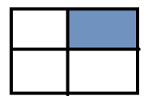
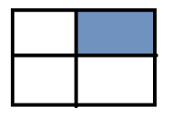
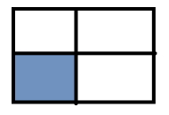

Выполненные задания:
-
Задание №0
Знайти суми елементів у вказаній області :
1) 2)
2)
3) 4)
5)Суму парних рядків
6)Суму непарних стовпців
7)У парних рядках – непарні стовпці, у непарних – парні.
-
Задание №1
Дано інформацію про прибуток К магазинів протягом тижня. Знайти :
1) загальний прибуток кожного масиву за тиждень;
2) загальний прибуток усіх магазинів по дням (загальний прибуток усіх магазинів за понеділок, за вівторок, і т.д.);
3) загальний прибуток за робочі дні
4) загальний прибуток за вихідні дні
5) максимальний прибуток за середу
6) сформувати загальний список (одновимірний масив) зі значенням, які що більші за 200
7) відсортувати кожен тиждень за зростанням
8)відсортувати тижні (рядки) за спаданням максимального елементи у цьому тижні (рядку), тобто при порівнянні рядків потрібно порівнювати максимальні елементи у кожному з цих рядків
9) упорядкувати тижні (рядки) за спаданням суми елементів у рядку (тобто при порівнянні двох рядків треба знайти суму кожного з рядків і порівнювати ці суми, на основі цих сум буде зрозуміло, який з елементів повинен іти раніше) -
Задание №2
Дано історію цін на цінні папери за деякий період (згенерувати від 1 до 10000):
Сформувати список з тих цін, які більші за попереднє значення -
Задание №3
Дано історію цін на цінні папери за деякий період (згенерувати від 1 до 10000):
Сформувати новий масив, що міститиме значення цін у відсотках стосовно максимального -
Задание №4
Дано історію цін на цінні папери за деякий період (згенерувати від 1 до 10000):
Підрахувати кількість змін цін -
Задание №5
Дано історію цін на цінні папери за деякий період (згенерувати від 1 до 10000):
Визначити, чи є ціна, що менше 1000 -
Задание №6
Дано історію цін на цінні папери за деякий період (згенерувати від 1 до 10000):
Визначати, чи усі ціни більше за 1000 -
Задание №7
Дано історію цін на цінні папери за деякий період (згенерувати від 1 до 10000):
Підрахувати кількість цін, що більше за 1000 -
Задание №8
Дано історію цін на цінні папери за деякий період (згенерувати від 1 до 10000):
Підрахувати суму цін, що більше за 1000 -
Задание №9
Дано історію цін на цінні папери за деякий період (згенерувати від 1 до 10000):
Знайти першу ціну, що більше за 1000 -
Задание №10
Дано історію цін на цінні папери за деякий період (згенерувати від 1 до 10000):
Знайти індекс першої ціни, що більше за 1000 -
Задание №11
Дано історію цін на цінні папери за деякий період (згенерувати від 1 до 10000):
Знайти останню ціну, що більше за 1000 -
Задание №12
Дано історію цін на цінні папери за деякий період (згенерувати від 1 до 10000):
Знайти індекс останньої ціни, що більше за 1000